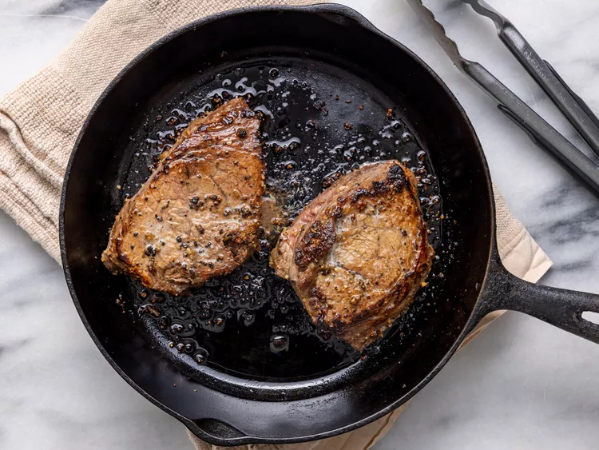

Home
Steak

Description:
Steak is marinated in the fridge for 45 minutes, then quickly pan-seared in a cast iron skillet before it is finished in the oven.
Ingredients:
- 2 (6 ounce) beef top sirloin steaks
- 2 cups orange juice
- 1 cup apple cider vinegar
- ½ cup Worcestershire sauce
- 1 ½ tablespoons steak seasoning (such as Fiesta Brand Uncle Chris'), or to taste
- freshly ground black pepper to taste
- 2 teaspoons olive oil
- sea salt to taste
- Gather all ingredients.
- Place steaks side by side in large casserole dish. Add orange juice, cider vinegar, and Worcestershire sauce.
- Marinate, uncovered, in the refrigerator for 45 minutes.
- Remove casserole dish from refrigerator. Cover steaks with plastic wrap and let allow to come to room temperature, at least 15 minutes.
- Place steaks on a clean work surface and generously rub with steak seasoning and black pepper.
- Heat olive oil in a cast-iron skillet over high heat.
- Cook steaks in the hot skillet until lightly browned on the bottom, 2 ½ minutes.
- Flip and cook until browned on the other side and red in the center, about 2 minutes more.
- Transfer skillet with the steaks to the oven.
- Bake in the preheated oven until steaks are firm and reddish-pink to lightly pink in the center, 8 to 10 minutes. An instant-read thermometer inserted into the center should read from 130 degrees F (54 degrees C) to 140 degrees F (60 degrees C).
- Remove steaks from oven; season with salt. Let rest for 5 minutes before serving.
- Enjoy!